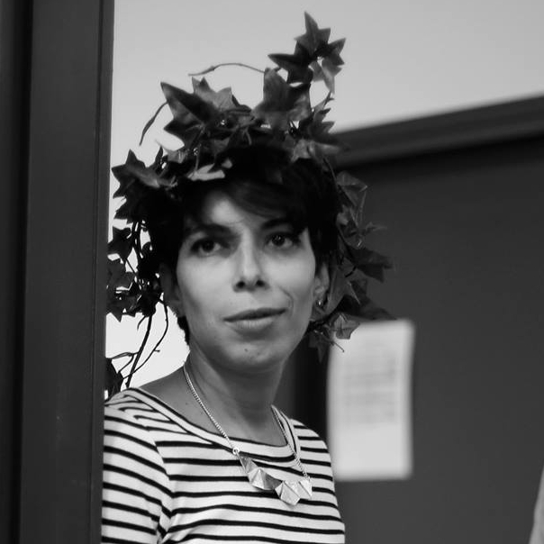
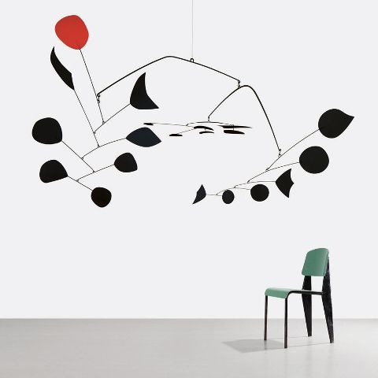

Hello
Je m'appelle Sarah, je suis D.A, et actuellement en transition pro avec un double cursus UX/UIwebdesign à Webstart.
Je fais ici, mes premiers pas dans le developpement Web ;)
Passions
En plus d'aimer le design graphique, l'illustration, le branding et l'UI, mes autres passions sont le design d'intérieur et l'architecture , parmi mes artistes préferés il y' a: le corbusier,le couple Charles et Ray Eames et Alexander Calder entre autres.
Le corbusier, de son vrai nom, Charles-Édouard Jeanneret-Gris, est un maître de l'architecture
contemporaine qui a travaillé en France ainsi qu'a l'etranger.
Charles et Ray Eames sont quand à eux, un couple influent de designers de la fin des années 1940,
dont
l'influence ce ressent à nos jours
j'aime beaucoup la philosophie du couple Eames parcequ'ils prônent une approche universelle de leur discipline, s’exprimant ainsi à travers de nombreux supports : architecture, mobilier, film, textile, exposition de musées, magazines… et jeux!
Alexander Calder est un peintre et sculpteur, surtout connu pour ses mobiles metaliques, en suspension
Contact
Si vous voulez me contactez, ou juste me faire un petit coucou c'est par ici ;)